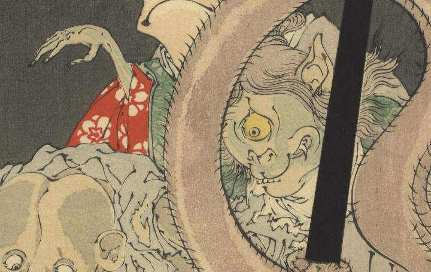

つづらの中から出てきた、一つ目の妖怪。髪が長く耳が尖り、牙が生えている。赤い着物を着て右手を上げているようである。
著作者：芳年／出典：親書誌：U426_nichibunken_0428：おもゐつゝら／日付：2016／資源識別子：U426_nichibunken_0428_0001_0001
Copyright (c)2010- International Research Center for Japanese Studies, Kyoto, Japan. All rights reserved.